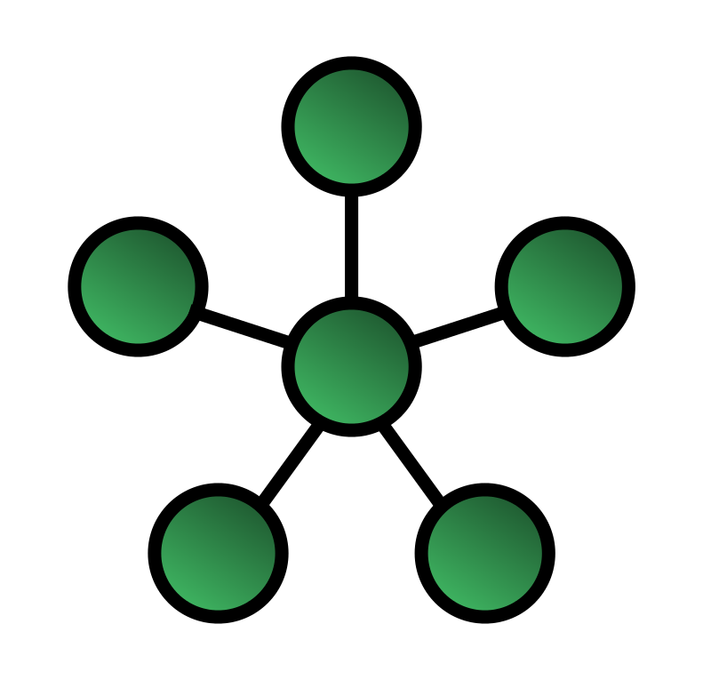

Informations tirées du cours de Réseaux 1 de M. Michaux, d'OpenClassrooms et de Wikipédia.
Certaines informations et acronymes mentionnés dans cette synthèse proviennent également du cours d'Installation et maintenance des ordinateurs.
1. Introduction
« Dès qu'il y a une forme de communication, il y a un réseau. »
1.1. Omniprésence des réseaux
À l'époque actuelle, les réseaux sont partout. Chez nous (réseaux domestiques), dans notre travail (réseaux professionnels)
et ils nous suivent même quand nous nous déplaçons (réseaux nomades). Que ça soit pour communiquer, pour obtenir des informations,
pour le divertissement, le partage de fichiers, le shopping, etc, on voit que les réseaux ne se limitent pas qu'à l'informatique.
1.2. Topologies : physique et logique
En réseau informatique, une topologie est un arrangement des éléments qui composent le réseau. Lorsqu'on parle des caractéristiques physiques d'un réseau
informatique, il s'agit de son organisation spatiale, c'est-à-dire de la façon dont les différents équipements sont interconnectés (avec différents câbles, par exemple).
L'aspect logique, c'est la façon dont les données transitent entre les lignes de communication. Voici quelques exemples
de topologies de réseaux :
Bus
Étoile (star) 
Anneau (ring)
Maillé (mesh)
Arbre (tree)
Les topologies physiques et logiques ne correspondent pas forcément sur un même réseau.
Par exemple, si on relie des ordinateurs à un hub, la topologie physique est une étoile.
Mais la topologie logique est un bus. En effet, sur un hub, seule une machine peut émettre à la fois. Les autres doivent écouter le réseau pour savoir
si elles peuvent émettre (voir 4.2. Hub et switch).
1.3. Échelle des réseaux informatiques
On distinguera quatre grands types de réseaux informatiques, en fonction de l'échelle spatiale à laquelle ils fonctionnent :
Le PAN ("Personal Area Network", réseau personnel) : niveau personnel. Technologies : Bluetooth, Wireless USB... ; distance = ~1 m.
Le LAN ("Local Area Network", réseau local) : niveau local. Technologies : Wi-Fi, Ethernet... ; distance = ~10 m. à ~1 km.
Le MAN ("Metropolitan Area Network", réseau métropolitain) : niveau d'une ville. Technologies : Réseaux TV, WIMAX, Metro Ethernet... ; distance = ~10 km.
Le WAN ("Wide Area Network", réseau étendu) : niveau mondial. Technologies : Internet (TCP/IP), GSM... ; au niveau planétaire.
1.4. Modèle client-serveur
Des clients font des requêtes à un serveur via internet.
L'environnement client-serveur désigne un mode de communication entre plusieurs programmes à travers un réseau : le client envoie des requêtes,
le serveur attend les requêtes du client, puis il y répond. La requête peut se faire à différents niveaux. Par exemple, au niveau local,
si on communique avec un appareil qui se trouve dans le même bâtiment, ou au niveau "wide" si on passe par internet pour contacter un serveur.
Ce modèle est très utilisé. Il est décliné pour de nombreux services : navigation web, messagerie instantanée, gaming en multijoueurs, utilisation d'un Chromecast...
Le serveur fournit un service au client. Ce n'est jamais le serveur qui prend l'initiative de parler au client.
1.5. Distinction entre deep web et dark web
Le deep web est la partie du world wide web qui n'est pas indexables par les moteurs de recherche. On parle souvent de la "face
cachée de l'iceberg" en parlant du deep web, car il y a en effet énormément de données qui ne sont pas trouvables en faisant des recherches sur Google. Nous utilisons en permanence
le contenu du deep web sans nous en rendre compte. Dès qu'un site demande de se logger pour accéder à un contenu, ce contenu se trouve dans le deep web. Les services d'e-mails sont
dans le deep web, au même titre que les transactions bancaires, les pages des réseaux sociaux (quand on ne met pas tout en mode "public" :-P), etc.
Le dark web, bien que souvent confondu avec le deep web, est traduit en français par "internet clandestin". Il utilise l'internet public pour
héberger son contenu, mais son accès est restreint, car uniquement accessible via certains logiciels et/ou avec des protocoles spécifiques. À ce titre, il se trouve donc
dans le deep web, puisqu'il n'est pas indexé non plus par les moteurs de recherche. En revanche, il ne constitue qu'une toute petite partie du deep web.
Bref, le dark web n'est aucunement "plus vaste que le web visible", contrairement à ce qu'on entend parfois.
2. Modèle OSI
Le modèle OSI, pour Open System Interconnection, est un modèle de communication qui est devenu une norme ISO.
Développé dans les années 70, il a permis de créer un environnement mondial avec une interopérabilité des réseaux et des programmes. Bien qu'il ait été pensé pour les réseaux informatiques,
le modèle OSI est tout de même capable de modéliser l'intégralité des systèmes de communication.
Le modèle OSI décompose en 7 couches le flux des données dans un système de communication. Les couches partent du plus petit niveau de représentation de
l'information (les bits qui sont transmis via des câbles par signaux électriques) jusqu'au plus haut niveau (l'application qui est utilisée pour profiter de cette information). Chaque couche
intermédiaire remplit différents rôles et communique avec les couches qui lui sont adjacentes. Toutes les couches ne sont pas toujours nécessaires pour communiquer.
Il est essentiel de comprendre que l'information circule entre les couches :
Pour envoyer une information sur un réseau, on passe de la couche application à la couche physique. Les données sont
encapsulées à chaque passage à
la couche suivante.
Pour recevoir l'information de réponse, on passe de la couche physique à la couche application. Les données sont alors
désencapsulées,
c'est-à-dire "extraites", après chaque couche (on parle parfois de demultiplexing).
Avec ce concept d'encapsulation/désencapsulation, le modèle OSI est du coup parfois comparé à
un oignon.
En termes techniques, cette encapsulation se fait en rajoutant un entête (header en anglais) aux données reçues des couches supérieures. Cet entête contient
toutes sortes d'informations pour que le transfert des données s'opère correctement. Ainsi, la couche 4 rajoute un entête, puis la couche 3 fait de même, puis la couche 2 et le tout est
converti en bits par la couche 1. Un entête n'est jamais gros (quelques octets) et il n'est décodable que par la couche qui l'a émis ; un entête de la couche 4 (TCP) n'est
pas utilisable par la couche 3 (IP), elle ne voit ça que comme des données à envoyer plus bas. C'est pour cela qu'on observera des redondances dans le contenu des entêtes
(des CRC à plusieurs niveaux, des checksums, etc...).
Les entêtes pour chaque protocole seront détaillés plus loin dans cette synthèse.
Un paquet IP encapsulé dans une trame Ethernet
Moyen mnémotechnique pour retenir les 7 couches : Pour Le Réseau, Tout
Se Passe Admirablement
Couche 1 : Physique (PHY)
La couche physique est responsable de la transmission et de la réception des données "brutes". Elle convertit les bits (signaux logiques, càd des suites de 0 et de 1) en signal électrique,
radio ou optique pour être transportés entre médias de communication.
La couche liaison fournit un lien entre les noeuds (les différents appareils)
sur un même réseau.
Les protocoles mis en oeuvre en couche 2 peuvent détecter (et corriger au besoin) les erreurs qui auraient pu survenir à la couche physique. C'est la couche 2 qui ouvre et ferme la liaison
entre deux appareils connectés physiquement. Dans le cas d'envoi de données, la couche 2 encapsule les paquets envoyés par la couche 3 pour en faire des trames
(ou "frames", en anglais), puis elle passe ces trames à la couche 1.
Ethernet
Le protocole Ethernet est le plus utilisé au sein des réseaux locaux. Pour qu'il fonctionne, il faut que tous les utilisateurs aient du matériel compatible
(même signal, même tension...).
Ethernet a pris le monopole, car il a su s'adapter au fil des années et qu'il répond très bien aux besoins des utilisateurs. De nos jours, même des systèmes d'acquisition de données
professionnels utilisent Ethernet.
MTU
Une trame Ethernet a une taille maximale de 1500 octets ; ce nombre est ce qu'on appelle sa maximum transmission unit (MTU).
Adresse MAC et ARP
Pour communiquer entre deux équipements, on utilise des adresses IP (voir couche 3), mais aussi des adresses MAC (Media Access Control),
parfois appelées "adresses physiques". C'est la carte réseau d'un appareil qui lui fournit cette adresse. Elle est codée sur 48 bits (6 octets)
et est souvent notée comme ceci : 04:d4:e6:f9:56:1b.
Pour communiquer entre appareils situés sur un même réseau, on utilise principalement les adresses MAC et pas les adresses IP. C'est l'Address Resolution
Protocol (ARP) qui est utilisé pour découvrir les adresses MAC des appareils voisins. En faisant une ARP request, on envoie une trame à chaque
occupant du réseau (broadcast). Cette trame contient l'IP de l'émetteur, son adresse MAC et l'IP de destination. Celui qui a l'IP correspondante à l'IP de destination renvoie
une ARP reply uniquement à l'émetteur (unicast). Tous les hôtes qui ont reçu l'ARP request conservent l'adresse MAC
de l'émetteur dans leur cache (car ça peut servir pour plus tard). Ce cache ARP, ou table ARP, est une table de correspondance que l'on peut voir avec la
commande arp -a sous Windows.
Entête des trames Ethernet
L'encapsulation d'une trame Ethernet se fait par l'ajout d'un entête (header). Une trame et son entête seront souvent appelés paquet Ethernet.
Dans le header, on retrouve dans l'ordre :
un préambule de 7 octets (56 bits qui permettent la synchronisation des horloges entre émetteur et recepteur);
une marque de "début de trame" d'1 octet, qui indique en gros "salut, les données commencent ici";
les adresses MAC de destination et d'émission (6 octets chacune);
Unicast : il n'y a qu'une hôte destinataire
Multicast : on trouve plusieurs adresses de destination
Broadcast : l'adresse indiquée est ff:ff:ff:ff:ff:ff pour que tout le monde reçoive la trame
un champ "EtherType" qui ne nous intéressera pas pour l'instant;
ensuite, on retrouve la trame, qui constitue le corps des données à envoyer, allant de 46 à 1500 octets (si les données font moins de 46 octets,
il y aura du rembourrage avec des bits à 0, du "padding", pour arriver au minimum requis);
enfin, après la trame, on retrouve un champ pour le Cyclic Redundancy Check (CRC) qui fait 4 octets et permet la détection de
données corrompues.
Avec tout cela, un paquet Ethernet doit avoir une taille minimale de 64 octets.
Schémas récapitulatifs du transport sur les couches 1 et 2
CSMA/CD
Dans les réseaux câblés, il est possible que des paquets entrent en collision et soient ainsi perdus.
Pour pallier ce problème, on a mis en place le protocole Carrier-Sense Multiple Access/Collision Detection (CSMA/CD) dans les premières années de la
technologie Ethernet. Il consiste à écouter ce qu'il se passe sur le réseau et de n'envoyer que si personne n'émet de trame. En plus de cela, il prévoit de détecter d'éventuelles collisions
qui pourraient tout de même se produire. Si une collision est détectée, chaque émetteur concerné par la collision attend un temps aléatoire avant de renvoyer sa trame.
Avec la popularisation des switchs, les problèmes de collisions sont beaucoup moins fréquents et le CSMA/CD est devenu beaucoup moins important.
Protocole WiFi
Le protocole WiFi fait circuler les informations de façon similaire à Ethernet, même s'il ne s'agit plus de trames. Ethernet et WiFi sont compatibles en entre eux ; Ethernet
(norme 802.3) s'occupe du câblé et WiFi (norme 802.11) s'occupe du sans fil.
Depuis sa création, la norme WiFi a reçu de nombreuses modifications. Nous en sommes aujourd'hui aux normes 802.11ac (Wi-Fi 5) et 802.11ax (Wi-Fi 6) qui coexistent.
Couche 3 : Réseau (IP, ICMP)
La couche réseau (parfois appelée "la couche internet") permet le transfert de paquets entre des noeuds situés
sur des réseaux différents. Un paquet ne peut pas transiter directement sur un réseau ! S'il est envoyé, il est encapsulé dans des trames par le protocole
Ehternet (en couche 2), qui elles-mêmes finissent en un enchaînement de bits pour circuler sur le support physique (couche 1). S'il est reçu, il est désencapsulé dans l'ordre inverse.
Sur un réseau informatique, chaque noeud a une adresse. Pour envoyer une information à un noeud précis, il suffit de connaître l'adresse du noeud de destination. Pour arriver à
cette destination, il est possible (mais pas systématique) que l'information transite par des noeuds intermédiaires via un mécanisme de
routage.
Dans les réseaux informatiques, c'est le protocole IP qui se charge de fournir des adresses aux noeuds. Il existe deux versions du protocole IP : l'IPv4 et l'IPv6. L'IPv4 est le
protocole utilisé actuellement.
IPv4
Ce protocole existe depuis 1981. Il a été établi sur le document RFC791.
Les adresses fournies par ce protocole sont codées en 32 bits (4 octets) et ne permettent donc que 4 294 967 296 possibilités. Pensé à l'origine pour que chaque machine
possède une adresse unique au monde, nous sommes arrivés au bout du système depuis 2011. Cependant, si elles ne quittent pas un réseau donné, il n'y a aucun problème pour que
des adresses identiques coexistent dans des environnements complètement séparés. Ce n'est qu'en arrivant sur internet que cela pose problème. Grâce à un processus appelé
network address translation (NAT), on obtient une IP dite "publique" qui est différente de celle qu'on a sur un réseau local.
Datagramme IP
Un datagramme est une unité de transfert composée de deux éléments : un entête (ou header) et une charge utile (payload). Le header contient toutes les informations nécessaires
au routage (IP de l'émetteur, IP du destinataire, la version du protocole, le time to live, etc.), tandis que le payload constitue le corps des données qui doivent être transportées.
C'est de cette façon que le protocole IP encapsule les données venues des couches supérieures.
Pour tous les détails contenus dans l'entête d'un datagramme IP, je vous renvoie vers la
page Wikipédia dédiée à ce sujet.
Fragmentation
Si un datagramme IP est trop volumineux pour être pris en charge par l'hôte suivant (c'est-à-dire que la MTU de l'hôte suivant est plus petite que la taille du paquet), il est alors
fragmenté. Chacun des fragments ainsi créé est marqué pour que
le destinaire sache qu'il doit les réassembler pour obtenir le datagramme d'origine. Tous les fragments doivent parvenir à l'hôte pour que le datagramme arrive à destination : si un
seul fragment est perdu, tout le datagramme est droppé (dans ce genre de cas, si le protocole TCP est utilisé [voir couche 4], il renverra généralement le paquet en entier).
Sachant que la MTU du protocole Ethernet v2 est de 1500 octets, la couche 3 a pour rôle de fragmenter ses datagrammes pour qu'ils puissent être pris en charge par la couche 2,
car Ethernet n'est pas capable de faire la fragmentation lui-même.
ICMP
L'IP ne gère pas les messages d'erreurs, mais l'Internet Control Message Protocol (ICMP) est un protocole qui en est capable. Il fait lui aussi
partie intégrante de la suite
des protocoles Internet et il est défini dans la RFC792. Ce protocole est utilisé par les équipements réseaux (comme les routeurs) pour envoyer des informations concernant la
réussite ou l'échec d'envoi de données vers une autre adresse IP. La structure du datagramme ICMP est pratiquement la même que celui de l'IP.
L'ICMP utilise un Cyclic Redundancy Check, comme le protocole Ethernet, pour détecter les erreurs. En 4 octets dans son header, il véhicule un message
de contrôle (avec un numéro
de type et un numéro de code) qui indique si la transmission s'est bien déroulée. Une réponse de "code 0" indique en général que tout s'est bien passé.
Il existe une version de l'ICMP pour l'IPv6.
IPv6
Ce protocole permet un adressage beaucoup plus vaste. Les adresses sont codées sur 128 bits, ce qui offre par conséquent 2128 possibilités (340 sextillons ; c'est un nombre à 39 chiffres !).
On ne peut malheureusement pas facilement passer à l'utilisation de l'IPv6, car les adresses IPv6 ne sont pas compatibles avec les adresses IPv4. Il faudrait donc que le monde entier
soit prêt pour ce changement et que l'on transitionne tous au même moment. Or,
selon les statistiques de Google, on est loin du compte...
Couche 4 : Transport (TCP, UDP)
La couche transport est la plaque tournante de tous les protocoles. Elle fonctionne en trois phases : établissement, transfert, libération. Son intérêt principal est de fournir une
abstraction aux logiciels ; il n'est pas nécessaire de savoir quel type de réseau se cache sous la couche 4, ce qui simplifie le côté applicatif (couche 7). La couche 4 est
exécutée principalement sur les terminaux (càd l'appareil du client, de l'utilisateur final ; donc un PC, un smartphone...) tandis que les couches 2 et 3 se chargent
de l'équipement réseau.
TCP
Dans les réseaux informatiques, la couche transport est généralement prise en charge par le Transmission Control Protocol (TCP). Il traite de bout en bout
des données de manière fiable sur des réseaux qui ne le sont pas toujours. Il est aussi capable de s'adapter dynamiquement à des variations de débit (bits/s), de nombre d'utilisateurs et à
d'éventuelles pannes. TCP complémente l'IP, créant ce qu'on appelle "la suite TCP/IP", aussi appelée "suite des protocoles Internet".
TCP parvient à acheminemer les données en garantissant la fiabilité du service grâce à un contrôle des erreurs.
Chaque segment TCP
est composé d'un header et d'un payload (la "charge utile", c'est-à-dire les données).
Le TCP est un protocole orienté connexion. Via un processus appelé "three-way handshake" (voir plus bas), deux appareils qui veulent
communiquer établissent une connexion préalable en ouvrant un socket (qui est identifié par un numéro : le port) avant de commencer
à envoyer des données. Il s'agit d'une étape importante pour assurer la fiabilité des transmissions.
Pour détecter des pertes éventuelles de données lors du transfert, TCP utilise un système de somme de contrôle (checksum, en anglais).
Ce nombre 16 bits est une sorte d'empreinte numérique qui est calculée sur base des éléments contenus dans le segment TCP. L'émetteur joint son checksum au segment
et si le destinataire obtient un résultat différent en calculant le checksum de son côté, il y a une forte probabilité que des données aient été perdues ou
corrompues. Dans ce cas, le segment est envoyé à nouveau.
C'est aussi TCP qui détermine les priorités d'utilisateurs sur un réseau et qui partage la connexion internet.
Three-way handshake
Établissement d'une connexion TCP
Établir une connexion TCP requiert trois étapes :
Un hôte (Alice) envoie un SYN (message de synchronisation) à un second hôte (Bob). Ce message est une séquence de nombres qu'on
appelera x.
Bob répond avec un SYN-ACK (synchronisation-acknoledgement (en)/acquittement (fr)).
Pour faire cela, il renvoie le nombre de départ incrémenté de 1
(x + 1) et il envoie également sa propre séquence qu'on appellera y.
Pour terminer, Alice renvoie un ACK (message d'acknoledgement (en)/acquittement (fr)) avec le second nombre incrémenté de 1 (y + 1)
auquel Bob n'a pas besoin de répondre.
Une communication est maintenant établie entre le Alice et Bob. Quand la connexion doit être fermée, Bob ou Alice envoie un FIN (finalize) et l'autre répondra par un FIN ACK
(finalize-acknoledgement), bien que l'autre hôte n'attende pas forcément la réponse.
Sockets réseaux et ports logiciels
Les serveurs ne peuvent pas communiquer avec un nombre illimité de clients simultanément. Par défaut, un serveur ne peut offrir que 65 535 sockets (un entier
16 bits/2 octets) à la fois, car c'est le nombre maximum de ports TCP disponibles. Parmi ces ports, les 1024 premiers sont
réservés à des ports connus. Le port 80 est par exemple le port HTTP. Tous les autres sont libres en théorie.
Ainsi, si Alice lance son navigateur pour aller sur Google, elle parle au port 80 d'un de leurs nombreux serveurs. Ensuite, pour libérer le port et laisser Bob parler à son tour avec
lui, le serveur renvoie Alice aléatoirement sur un autre port supérieur ou égal à 1024. Le port d'écoute sert donc juste à l'initialisation de la connexion. L'interlocuteur est rapidement
mis sur son propre port pour laisser le 80 libre.
Les champs du header TCP
Dans le header d'un datagramme TCP, on retrouve principalement les informations suivantes :
Le port source
Le port de destination
Le numéro de séquence SYN
Le numéro de séquence ACK (au besoin)
Des flags :
URG : données urgentes
ACK : paquet acquittement
PSH : données à transmission immédiate
RST : reset de la transmission
SYN : demande de synchro/connexion
FIN : fin de la connexion
Une "window" qui permet au récepteur d'indiquer à l'émetteur la quantité de données qu'il est capable d'accepter.
Une somme de contrôle
Des options (facultatives)
Du padding (pour arriver à 32 bits au besoin)
UDP
Le User Datagram Protocol (UDP) est un protocole de transmission en mode sans-connexion qui est utilisé à la place de TCP
dans certains cas. Contrairement à TCP, il
n'établit pas de connexion préalable et il ne cherche pas à s'assurer que l'information est bien parvenue à destination. L'UDP convient donc lorsque le contrôle d'erreur
n'est pas vital ou que la rapidité de transmission est plus importante que la fiabilité (le streaming audio ou vidéo, par exemple). UDP est parfois utilisé conjointement à un contrôle
d'erreur au niveau application (couche 7).
Ces couches ne seront abordées en détails qu'en Bloc 2 dans le cadre du cours de Réseaux 2.
3. Sous-réseaux et calcul d'IPv4
En fonction de la topologie qu'on désire, il est possible de découper logiquement un réseau en plusieurs petits réseaux, qu'on appelle sous-réseaux.
On peut ensuite interconnecter ces sous-réseaux si on le souhaite, mais ce n'est pas obligatoire. On peut aussi choisir de créer un réseau très étendu avec énormément de machines
connectées dessus et peu, voire pas, de sous-réseau dedans. Dans tous les cas, il faudra faire des calculs d'adresses IP.
Un sous-réseau est donc une subdivision logique d'un réseau de taille plus importante. Le masque de sous-réseau permet de distinguer la partie de l'adresse
commune à tous les appareils du sous-réseau et celle qui varie d'un appareil à l'autre. La subdivision d'un réseau en sous-réseaux permet de limiter la propagation des
broadcasts, ceux-ci restant alors limités au sous-réseau. Des routeurs sont utilisés pour la communication entre les machines appartenant
à des sous-réseaux différents.
3.1. Masque de sous-réseau
Une adresse IPv4 ne fonctionne qu'avec un masque qui lui est associé. Un masque fait la même taille qu'une adresse IP (4 octets). Il ressemble à une suite du genre 255.255.255.0.
En binaire, cela donne : 1111 1111 . 1111 1111 . 1111 1111 . 0000 0000
Dans un masque de sous-réseau, dès qu'il y a un zéro, il ne peut plus y avoir d'autres 1 sur la droite du nombre en binaire. De plus, il n'existe pas de masque avec uniquement des 0.
Par conséquent, il n'y a que 32 masques de réseau possibles. Deux adresses IP appartiennent à un même sous-réseau si elles ont en commun les bits du masque
de sous-réseau.
3.2. Calculer une adresse de sous-réseau
Pour calculer l'adresse de sous-réseau liée à une adresse IP donnée, on effectue
une opération ET logique bit à bit entre l'adresse IP et le masque
de sous-réseau.
Dans l'exemple suivant, nous reprenons l'adresse IP 192.168.0.12 et le masque 255.255.255.0 :
En nombres décimaux, l'adresse de sous-réseau est donc 192.168.0.0. Pas de grosse surprise ici, car le masque avait un nombre de 0 qui est un multiple de 8 (ici, 24). Cela signifie
qu'outre les 8 bits de droite, on va forcément conserver tous les bits à 1 de l'adresse IP sans en ajouter (puisque 1 ET 1 = 1). Avec un peu d'expérience, on connaît facilement le
résultat sans avoir à faire trop d'opérations. En revanche, ça se corse quand on a des masques un peu plus exotiques.
Prenons 10.13.55.62/22 en exemple :
En nombres décimaux, l'adresse de sous-réseau est donc 10.13.52.0. Cette fois, le troisième octet a été modifié, car il y avait des 1 tout à droite de l'adresse. Mais ça n'aurait pas
été le cas si le troisième octet avait été 184 (1011 1000) ou 60 (0011 1100) ! Bref, c'est assez difficile de "deviner" l'adresse d'un réseau sans au minimum écrire chaque octet
en binaire.
3.3. Broadcast, hôte minimum/maximum et passerelle
Maintenant que nous sommes capables de calculer l'adresse d'un réseau, il nous est possible d'obtenir d'autres infos sur base de cela : l'adresse de broadcast
("diffusion", c'est l'adresse avec laquelle on s'adresse à toutes les machines présentes sur le réseau), l'adresse de la passerelle
par défaut (le routeur ; la default gateway en anglais), et les adresses min. et max. des hôtes.
Adresse de broadcast
Pour calculer l'adresse de broadcast, on effectue une
opération OU logique bit à bit entre l'adresse du réseau et le complément du masque ("l'inverse" du masque).
Reprenons l'adresse réseau 10.13.52.0 et cette fois le complément de son masque /22 :
En nombres décimaux, l'adresse de broadcast est donc 10.13.55.255. Si on utilise cette adresse pour envoyer une information, on l'envoie à toutes les machines qui sont sur le
sous-réseau.
Hôtes et passerelle
Chaque sous-réseau possède un nombre d'hôtes maximum. Ce nombre est égal au nombre d'adresses IP qu'on peut attribuer sur ce sous-réseau.
La première adresse d'un sous-réseau (l'hôte minimum), c'est l'adresse du réseau + 1. Dans le cas du réseau 10.13.52.0, l'adresse min. est donc 10.13.52.1.
Cette adresse est généralement attribuée à la passerelle (le routeur) qui est sur le réseau. On évitera donc de l'attribuer à une autre machine. Dans les faits, la première adresse IP
qu'on attribuera sera donc l'adresse du réseau + 2.
La dernière adresse possible d'un sous réseau, (l'hôte maximum), c'est l'adresse de broadcast - 1. Dans le cas du réseau 10.13.52.0,
qui a une adresse de broadcast de 10.13.55.255, l'adresse max. est donc 10.13.55.254.
3.4. Outils en ligne
Bien qu'il soit utile de comprendre comment calculer les IP à la main, c'est un processus qui peut s'avérer long et sujet à erreur. Il existe évidemment des outils en ligne qui
permettent de faire ces calculs à notre place. En voici quelques-uns :
Le site IPCalc, avec une interface d'un autre âge, mais qui fait très bien le travail.
Le site IP Subnet Calculator, qui n'a rien de mieux à offrir visuellement, mais qui va aussi très bien.
L'exécutable de M. Michaux, codé en WinDev, que votre PC va détecter comme
un programme louche, mais qui ne comporte a priori aucun risque ;-)
Mais pour rappel, les calculs d'IP à faire à la main sont un des éléments de l'évaluation de ce cours !
3.5. DHCP (Dynamic Host Configuration Protocol)
Pour faciliter la configuration du réseau, on automatise souvent l'attribution des paramètres IP. Aucun logiciel n'est nécessaire du côté client, tout est prévu par le serveur DHCP
qui s'assure qu'aucune adresse IP ne soit attribuée deux fois. Au niveau domestique, nos Box s'occupent de cette tâche.
Lorsqu'un appareil se connecte pour la première fois sur un réseau, il fait une DHCPDISCOVERY. Si le serveur DHCP valide ce client, il lui fait une offre d'adresse IP. Le client
acceptera alors par un processus appelé le DHCPREQUEST, et il se voit attribuer cette adresse IP.
On comprend vite l'intérêt de cette technologie pour l'utilisateur ! Pas besoin de gestion du réseau, pas besoin d'entrer soi-même une IP...
4. Matériel réseau
4.1. Cartes réseaux
De nos jours, presque toutes les cartes réseaux sont des cartes Ethernet, des cartes Wi-Fi ou encore des
cartes Bluetooth. On les appelle parfois aussi adaptateurs réseau ou encore Network Interface Cards (NIC). La plupart du temps, les NIC de bureau sont
au format PCI-Express (c'est-à-dire qu'elles se connectent sur un port PCI-Express de la carte-mère).
À notre époque, on trouve des cartes réseaux dans toutes sortes d'appareils : smartphones, routeurs, télévisions, imprimantes, tous les appareils domotisés... Si un appareil
est capable de se connecter à un autre via un réseau informatique, il a nécessairement une carte réseau.
Ce sont les cartes réseaux qui donnent les adresses MAC aux appareils. Un ordinateur qui possède de façon distincte une carte Ethernet, une carte Wi-Fi et une carte Bluetooth
se retrouve donc avec trois adresses MAC différentes. Pour les serveurs, il n'est pas rare qu'on installe deux cartes réseaux qui remplissent le même rôle, car cela permet une
meilleure qualité de service (cela évite notamment les pannes).
Modes de transmissions
Le rôle de ces cartes est de connecter les appareils au réseau. Pour cela, elles doivent transmettre les signaux électriques au bon format. Les échanges doivent être
cadencés pour qu'on sache où commence et où s'arrête chaque donnée ; sinon, on aurait juste un flot ininterrompu et incompréhensible de 0 et de 1.
On distingue trois modes de transmissions :
Simplex : Le transfert se fait dans un seul sens. Celui qui reçoit ne peut pas répondre à l'émetteur. On utilise ce principe pour la télévision, la
radio FM, ...
Half-duplex : Le transfert d'information est possible dans les deux sens, mais pas de façon simultanée. C'est ce qui se passe quand on communique avec des
talkies-walkies, par exemple.
Full-duplex : L'information peut aller dans les deux sens de façon simultanée. C'est le cas pour le réseau GSM, le protocole Ethernet, etc.
4.2. Hub et switch
Les hubs (concentrateurs) et swtichs (commutateurs) sont des appareils permettant de mettre plusieurs machines en réseau.
Dans les deux cas, les appareils sont reliés (physiquement ou logiquement) au switch ou au hub. La différence vient de la façon dont les informations circulent entre les machines.
Avec un hub, on a un schéma logique de bus. Quand une information circule, toutes les machines la voient. Elles ne sont pas toutes forcément destinataires
des données qui circulent, mais chaque machine voit toutes les données passer.
Plus il y a d'hôtes qui communiquent sur un seul hub, plus le réseau sera lent, car il faut attendre son tour pour "parler". Un hub ne travaille qu'au niveau de la couche 1 puisqu'il
ne sait pas lire les trames. À notre époque, on n'utilise pratiquement plus jamais de hubs pour des réseaux locaux, car il ne présentent aucun avantage (plus lents, moins sécurisés...).
Avec un switch, les paquets sont commutés, c'est-à-dire aiguillés, vers le(s) destinataire(s). On est sur un schéma logique d'étoile. Un switch possède sa propre table ARP
et il n'a pas besoin de CSMA, car il n'y a presque plus de collisions.
Anatomie et fonctionnement d'un switch
Le switch centralise les différents appareils d'un réseau qui lui sont connectés de façon physique (câble Ethernet) ou logique (par wifi).
Un switch seul forme une topologie en étoile et plusieurs swtichs interconnectés forment une topologie en arbre. Un switch a toujours des ports standards en façade (vitesse souvent
10/100/1000 Mbps), qui servent à connecter les appareils au switch,
et il possède parfois des ports plus rapides (uplink port) qui sont prévus pour connecter des switchs entre eux. Il peut s'agir de ports SFP pour connecter
de la fibre optique (vitesse max 10 Gbps !).
Il existe des switchs de niveau 2 et de niveau 3. Les switchs de niveau 2 ne travaillent que sur les couches 1 et 2 du modèle OSI. Ils sont capables de garder
en mémoire les adresses MAC des appareils qui communiquent avec eux. Un switch de niveau 3 peut également travailler sur la couche 3, il gère alors aussi les adresses IP et peut
les garder en mémoire également. Avec un switch de niveau 3 manageable (administrable), il est aussi possible de créer des sous-réseau
et de brider la connexion de certains utilisateurs. Un switch de ce genre a donc sa propre adresse IP.
Un switch fonctionne en full-duplex. Il travaille majoritairement avec une seule liaison à la fois, ce qui évite grandement les risques de collisions. Toute la bande passante
est octroyée à chaque liaison et ne doit donc pas être partagée.
Lorsqu'un switch reçoit une trame ou un paquet, il vérifie sa validité : si c'est invalide, il droppe. Si c'est valide, il extrait les adresses de l'émetteur et du destinataire, et il
la garde en mémoire pendant 5 minutes (pas plus, car la mémoire des switchs est assez limitée). Lorsque le destinataire est inconnu, le switch inonde le réseau (tous les appareils sauf
l'émetteur) pour retrouver le destinataire.
Certains switchs évolués permettent même d'alimenter des appareils en 24 V ou 48 V directement via le câble Ethernet ; c'est ce qu'on appelle le Power
over Ethernet (PoE). On peut y brancher des appareils tels que des téléphones fixes, des caméras, des capteurs, des micro-ordinateurs, de l'équipement réseau...
4.3. Routeurs
Les switchs relient les noeuds d'un réseau local entre eux et les routeurs relient ces réseaux locaux entre eux pour former un réseau étendu. Le routeur
sert de passerelle pour chaque réseau local : c'est la "porte de sortie/d'entrée" vers Internet.
Un routeur travaille sur les couches 1, 2 et 3 du modèle OSI. Quand il reçoit une trame venue de l'extérieur, il la désencapsule pour lire le paquet IP. Si la destination est sur son réseau,
il fera suivre l'information. Sinon, il transfèrera la trame vers un autre routeur en fonction de sa table de routage (une liste d'autres réseaux qu'il connaît ;
ça fonctionne un peu comme la table ARP des switchs). Quand un switch reçoit un paquet IP avec une destination vers l'adresse de la passerelle (... .1), il l'envoie au routeur qui se charge
du reste.
Pendant tout le transfert de l'information, les adresses IP de l'émetteur et du destinataire restent les mêmes. Par contre, les adresses MAC sont modifiées à chaque saut d'un routeur
à un autre. L'itinéraire que prend un paquet n'est pas toujours le même, il change en fonction de l'encombrement sur le réseau étendu. Si un routeur tombe, cela n'aura pas un grand impact.
Les paquets transiterons simplement par une autre route dans la toile complexe que forment ces réseaux interconnectés.
Un utilisateur lamba comme nous ne possède pas vraiment de routeur. Nous avons des BBox (ou équivalent) qui proviennent de notre FAI et qui offrent une large gamme de fonctionnalités
(sert de routeur, modem, switch, point d'accès sans fil, serveur, chromecast...).
5. Internet
Internet est un système mondial composé de réseaux informatiques interconnectés : c'est le réseau des réseaux. Il utilise la suite des protocoles internet TCP/IP pour
assurer la communications entre les réseaux et les appareils. Il permet toute une série de service, dont le world wide web, le partage de fichiers (FTP),
l'envoi d'emails (SMTP), les messageries instantanées, l'IRC, l'XMPP, le P2P, les VPN, la téléphonie, la télévision, etc.
5.1. Le web
Le world wide web (WWW), ou simplement web, est un système d'information multiformat auquel on peut accéder grâce à internet. C'est donc une des
facette d'Internet, mais il est important de comprendre que tout Internet n'est pas le web.
Serveurs web
Les serveurs utilisés sont spécifiques pour fournir le service web : on parle de serveur web, car ils hébergent le contenus des pages webs. Un serveur
web fonctionne avec du hardware adapté et des logiciels capables de gérer les requêtes venues du réseau étendu grâce à l'Hypertext Transfer Protocol (HTTP ; le protocole qui
codifie le transfert de ces informations).
La fonction principale d'un serveur web est donc de stocker des pages webs et de les envoyer lorsqu'un client le demande via un URL. Le serveur lit l'URL et renvoie l'information
concernée. Les pages fournies sont des documents Hypertext Markup Language (HTML ; le language commun de toutes les pages webs).
Navigateurs
Une page web est identifiée par une adresse unique, l'Uniform Ressource Locator (URL). Avec un navigateur internet, on peut accéder à ces URL et afficher de façon lisible les pages
web, car le navigateur se charge de traduire le language HTML. Le navigateur envoie une requête en utilisant le protocole HTTP et le serveur web lui répond avec le contenu souhaité,
ou bien avec un message d'erreur s'il est dans l'incapacité de le faire. Un code d'erreur
qui se situe dans les 400 indique un problème du côté du client, tandis qu'une
erreur dans les 500 indique un souci du côté serveur.
DNS
Le Domain Name System (DNS) permet d'éviter de devoir connaître les adresses IP de tous les services que nous utilisons sur Internet. En effet, pour communiquer avec un hôte distant,
on doit en principe connaître son adresse IP ! Les serveurs DNS mettent en place un mécanisme qui permet de trouver la correspondance entre un nom de domaine
et son adresse IP : on appelle cela la résolution de nom. Ce système fonctionne en gros selon un principe de recherche automatique sur un énorme annuaire.
Il y a des serveurs de noms répartis dans le monde entier pour gérer l'espace DNS de façon hiérarchique. Ces serveurs contiennent des tables de conversions qui permettent de résoudre
les noms. La résolution se fait de droite à gauche : ".be", puis "google", puis "www.". La résolution complète se fait par questionnement successif des différents domaines
jusqu'à tomber sur celui qui s'occupe de la zone recherchée.
5.2. File Transfer Protocol (FTP)
Les serveurs FTP permettent l'échange de larges données. Pour y accéder facilement, on utilise des logiciels comme FileZilla. La RFC initiale du FTP est la RFC959.
TFTP
Le Trivial FTP fonctionne de la même façon que le FTP, mais pour les réseaux locaux. Ce système permet de démarrer des machines en envoyant l'OS directement au travers du réseau.
Il est plus rapide que le FTP, car il n'est pas sécurisé. Il ne gère pas les erreurs de transmission.
5.3. SSH (Secure Shell)
Le Secure Shell est un protocole cryptographique qui permet de faire fonctionner des services réseaux de façon sécurisée sur des réseaux non-sécurisés. On s'en sert notamment pour
envoyer des lignes de commande à distance et pour se connecter à distance, mais tous les services immaginables sur un réseau informatique peuvent être sécurisé par un SSH.
Le protocole Secure Shell parvient à garantir un canal sécurisé sur des réseaux non fiables en utilisant une architecture client-serveur, en connectant le
client SSH à un serveur SSH.
6. Fracture numérique
La fracture numérique décrit les inégalités dans l'accès aux technologies de l'information et de la communication (TIC). On parle au moins de deux types de fractures :
l'accès physique (1re fracture), l'accès réel (2e fracture). On parle aussi parfois de la capacité d'usage
(3e fracture).
6.1. Accès physique
À travers le monde, l'accès à la technologie est loin d'être une norme pour tous. La richesse des pays a un impact direct sur cet accès. Sur la carte ci-jointe, on peut voir
que les pays du centre de l'Afrique ont un accès bien moins répandu que dans les pays de l'hémisphère nord.
La situation géographique au sein d'un même pays a aussi un impact considérable. La couverture d'accès à Internet est bien moins bonne dans les zones où la densité de population
est faible, comme dans les campagnes où dans des villes de montagnes. Et tous les pays ne sont pas égaux au niveau de leur topologie géographique.
De plus, certains pays dictatoriaux ou autoritaires imposent une censure sur le World Wide Web, en bloquant certains serveurs. Dans ces pays, avoir accès à internet ne signifie par
forcément que l'on peut consulter l'intégralité de son contenu.
6.3. Capacité d'usage
Utiliser la technologie n'est pas une science infuse. Il y a des centaines de notions à maîtriser pour pouvoir utiliser correctement, et pleinement, une technologie comme internet.
La crise sanitaire du COVID-19 a par exemple montré une recrudescence du phishing.
En effet, les confinements ont non seulement eu pour effet d'augmenter le temps passé sur nos smartphones,
mais ils ont sans doute aussi poussé de nouvelles personnes à se mettre à ces technologies alors qu'elles la connaissent mal.
A. Annexes
A.1. Définitions
Checksum : (ou somme de contrôle, en français) courte séquence de données numériques calculée à partir d'un bloc de données plus
important (par exemple un fichier ou un message) permettant de vérifier, avec une très haute probabilité, que l'intégrité de ce bloc a été préservée lors d'une opération de copie,
stockage ou transmission. On parle aussi parfois d'empreinte numérique.
Datagramme : Paquet de données transmis par un réseau local (LAN), composé d'un entête (header) et des informations à transmettre
(la "charge utile", ou "payload").
Entête (header): Données présentes au début d'un paquet Ethernet, d'un paquet IP ou d'un segment TCP. Le header d'un paquet IP contient,
entre autres, les adresses IP de l'émetteur et du destinataire, le protocole du format de la charge utile, etc. Le header d'un segment TCP contient, entre autres, le port source,
le port destination, le SYN, le ACK, des flags, etc.
Hôte : Terme général pour décrire tout noeud relié à un réseau informatique, qu'il fournisse des services
à d'autres systèmes ou utilisateurs (serveur informatique, ou "système hôte") ou qu'il soit un simple client.
Modèle OSI : Modèle conceptuel, devenu la norme, qui établit en 7 couches les fonctions de communication d'un réseau informatique
ou de télécommunication.
Noeud : Élément d'un réseau qui reçoit ou émet. Exemples : un ordinateur, un modem, un hub, un switch...
Paquet : Entité de transmission de la couche réseau (couche 3) permettant de transmettre un message d'une machine à une autre
sur un réseau.
Routage : Mécanisme par lequel des chemins sont sélectionnés dans un réseau pour acheminer les données d'un expéditeur jusqu'à
un ou plusieurs destinataires. Un routeur qui sert d'intermédiaire dans la transmission d'un message. Plus d'infos
ici.
Segment : Entité de transmission de la couche transport (couche 4).
Topologie de réseau : Arrangement (physique ou logique) d'un réseau informatique, définissant les liaisons entre les équipements du
réseau et une hiérarchie éventuelle entre eux.
Time to live (TTL) : Dans le cas de l'IPv4, champs du header qui indique le nombre de sauts qu'un paquet peut faire au maximum
avant d'expirer.
Trame : Entité de transmission de la couche liaison (couche 2).
A.2. Acronymes et sigles
De nombreux acronymes et sigles sont issus du cours d'Installation et maintenance des ordinateurs. En rouge sont mentionnés les acronymes les plus importants.
APAccess Point
APIApplication Programmable Interface
APNAccess Point Name
ARPAddress Resolution Protocol
BIOSBasic Input Output System
CASColumn Address Strobe
CFSCompletely Fair Scheduler
CISCComplex Instruction Set Computer
CLICommand Line Interface
CPUCentral Processing Unit
CRCCyclic Redundancy Check
DHCPDynamic Host Configuration Protocol
DIMMDual Inline Memory Module
DOSDisk Operating System
DNSDomain Name System/Server
ECCError Correcting Code (RAM)
ERPEnterprise Resource Planning
FAIFournisseur d'accès à Internet
FATFile Allocation Table
FBFully Buffered (DIMM)
FTPFile Transfer Protocol
GPUGraphical Processing Unit
GUIGraphical User Interface
HTMLHypertext Markup Language
httpHypertext Transfer Protocol
httpsHypertext Transfer Protocol Secure
IEEEInstitute of Electrical and Electronics Engineers